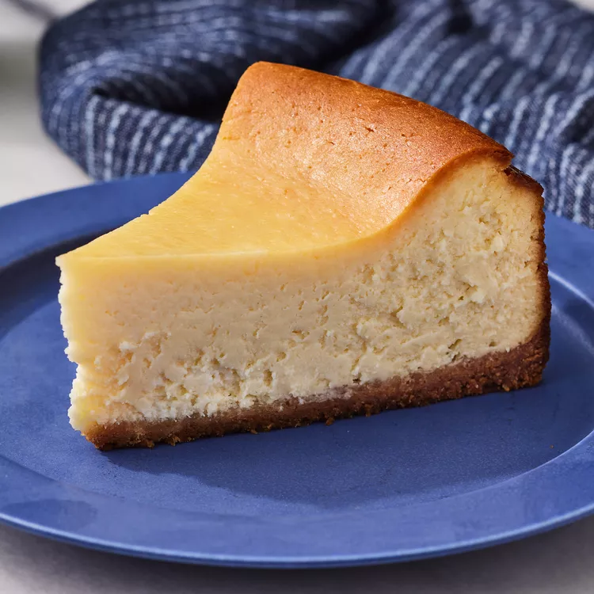

Cheescake

Description
Rich, decadent, and creamy...The best dessert to treat yourself.
Ingredients
- Graham crackers
- Butter
- Cream cheese
- Sugar
- Milk
- Eggs
- Sour cream
- Flour
- Vanilla
Steps
- Preheat the oven to 350 degrees F (175 degrees C). Grease a 9-inch springform pan.
- Mix graham cracker crumbs and melted butter together in a medium bowl until well combined; press onto the bottom of the prepared pan to make a packed crust.
- Mix cream cheese and sugar together in a large bowl until smooth. Blend in milk, then mix in eggs, one at a time, until just combined. Add sour cream, flour, and vanilla; mix until smooth. Pour filling onto prepared crust.
- Bake in preheated oven for 1 hour. Turn the oven off; let cheesecake cool in the oven with the door closed for 5 to 6 hours to prevent cracking.
- Chill in the refrigerator until serving.